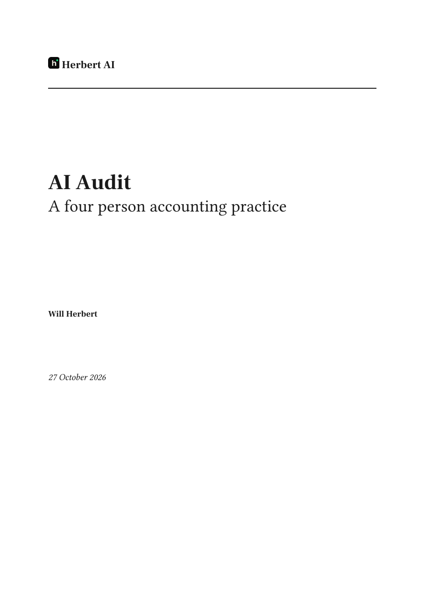
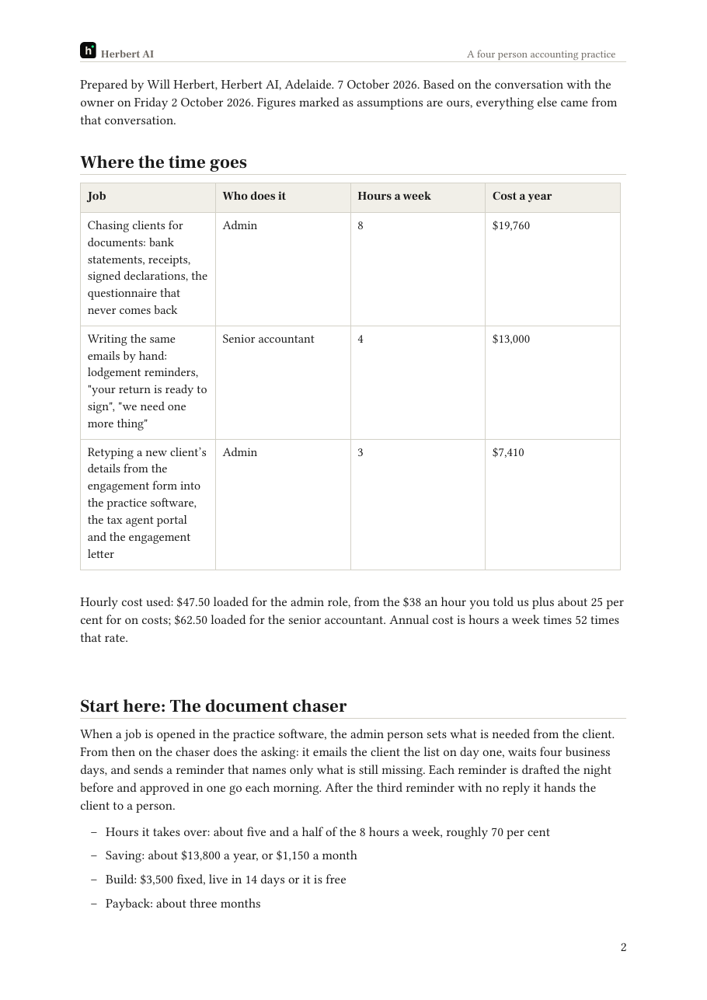
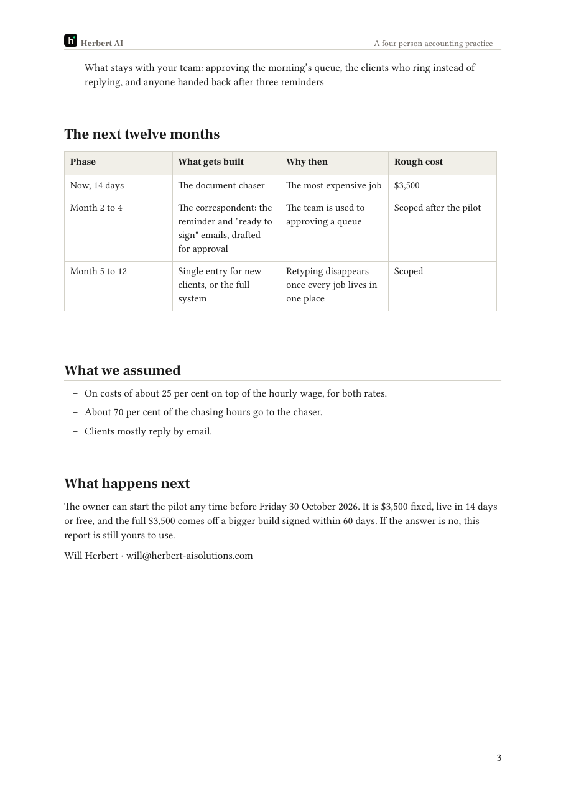

The real report is your template (business/sales/audit-report-template.md) filled with the same example and rendered through your Word brand template, exactly as a prospect would receive it. It runs to three pages: a cover, then two pages of content. The sheet on the site copies only the first table, in the website's type.


